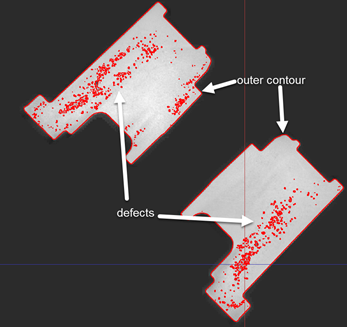

Scripted elements API
This reference describes functions and data structures necessary for the implementation of “scripted elements”.
See also
If you don’t know about the concept yet, take a look at the Scripted elements introduction.
The dialog function
💡 Notes:
The main purpose of this function is to use display a script dialog and allow the user to enter element parameters.
All tokens of other elements can be accessed within this function.
Signature
def dialog(context, params):
Parameter context
The context contains the following members:
Name |
Role |
Remarks |
|---|---|---|
.data |
UDE data storage access |
see “calculate” Function |
.stages |
Current stage |
List containing stage index of current stage |
.total_stages |
Number of stages |
Valid stage indices are 0 to total_stages - 1 |
.calc |
Function to calculate preview |
See below |
.result |
Directly set preview |
see “calculate” Function |
.is_new_element |
Flag if element creation |
True on (edit) creation, false on recalc |
.name |
Name of created element |
Read/write attribute |
.error |
Last error text from preview calculation |
Empty if no error occurred |
.edit_element |
Reference to edited element |
Only available during element editing |
.recalc_element |
Reference to element used in project recalculation |
Parameter params
The params contain a map of parameter values. It is only filled on element edit and contains the current parameters of the element.
Return value
The function must return a map containing the new element parameters.
If no map is returned the edit/creation is regarded as aborted by the user.
Calculating a preview
To calculate a preview, the context.calc() function can be invoked. It takes the following parameters:
Name |
Role |
|---|---|
params |
A map of parameters to be used for preview calculation |
stages |
Optional: A list of stage indices to calculate a preview in |
dialog |
Optional: A script dialog to message when preview calculation was successful. |
A call to this function will return immediately. The calculation is invoked asynchronously in a separate python instance.
See also
A preview calculation is implemented in the example offset_point_v2.
The calculation function
💡 Notes:
It is not possible to call script commands or read tokens from within this function. (Do not call
gom.app.project....)The function should loop over all stages to be calculated and set a computation result for each stage.
Signature
def calculation(context, params):
Parameter context
The context contains the following members:
Name |
Role |
Remarks |
|---|---|---|
.data[stage] |
UDE data storage access |
see below |
.stages |
Current indices |
List containing stage indices to calculate |
.total_stages |
Number of stages |
Valid stage indices are 0 to total_stages - 1 |
.result[stage] |
Directly set preview |
see below |
.is_new_element |
Flag if element creation |
True on (edit) creation, false on recalc |
.name |
Name of created element |
Read/write attribute |
.error[stage] |
Used to assign an error text |
Will set the element to not computed in the given stage |
.edit_element |
Reference to edited element |
Only available during element editing |
.recalc_element |
Reference to element being computed |
Only available during non-interactive calculation |
.progress_stages_computing |
Number of stages which have started to compute |
Used to display progress information |
.progress_stages_total |
Number of stages which have to be computed |
Used to display progress information |
Attribute context.data[]
The context.data is a list allowing to read or write additional data. The list is indexed with a stage index. The additional data is stored within the project, so the gom application must be able to serialize the provided data.
context.data[0] = value
value = context.data[0]
Attribute context.result[]
This is a write only list used to set computation results. The context.result[] should be set for each stage index listed in context.stages.
The format to write must match the type of the script element. For available result types, see Scripted actuals - Return values and Scripted checks - Return values.
Return value
On success the function must return True, otherwise False.
Scripted actuals - Return values
See also
The section Python API Examples - scripted_actuals provides an example for each element type.
Point
- Element Type:
Plain 3D point
- Result:
Point coordinate
result = (x,y,z)
result = gom.Vec3D
Distance
- Element Type:
Two point distance
- Result:
Start and end point of distance
result = { 'point1': (x,y,z), 'point2': (x,y,z) }
result = { 'point1': gom.Vec3D, 'point2': gom.Vec3D }
Value Element
- Element Type:
Plain value (only real values supported)
- Result:
any double value
result = x
Circle
- Element Type:
2D Circle with direction
- Result:
A center point, direction vector and radius (double)
result = { 'center' : gom.Vec3D, 'direction' : gom.Vec3D, 'radius' : double }
Curve
- Element Type:
3D polyline
- Result:
A curve can be made up by an array of subcurves. Each subcurve is a polyline. A closed curve will be created, if first point = last point.
As an option, a creation plane can be added.
result = [ { 'points': [gom.Vec3D, gom.Vec3D, ...] } ]
# Optional: Curve with additional creation plane
result = {
'curves': [{'points': [gom.Vec3D, ...]}],
'plane' : {'normal' : gom.Vec3D, 'distance' : float}
}
Surface Curve
- Element Type:
3D polyline with normals
- Result:
Like a curve with additional normal data, i.e. each surface curve can be made up by an array of subcurves.
result = {
'default': [
{'points': [gom.Vec3d, gom.Vec3d, ...], 'normals': [gom.Vec3d, gom.Vec3d, ...]},
{...},
...
]
}
Section
- Element Type:
3D polyline with normals
- Result:
Parameters ‘plane’, ‘cylinder’ and ‘cone’ are optional. They denote the creation geometry. You can only use one of them. Argument is a corresponding trait.
result = {
'curves': [{'points': [(x, y, z), ...], 'normals': [(x, y, z), ...]}, ...],
'plane' : {'normal' : (x, y, z), 'distance' : float},
'cylinder': ...,
'cone' : ...
}
Point Cloud
- Element Type:
Set of 3D points
- Result:
A set of points. The ‘normals ‘attribute is optional.
result = { 'points' : [ gom.Vec3D, gom.Vec3D, ... ] , 'normals' : [ gom.Vec3D, gom.Vec3D, ... ] }
Surface
- Element Type:
Mesh
- Result:
Defines a triangulation. The vertices attribute defines all points. The triangle attribute defines triangles between these points using indices into the vertex list.
result = { 'vertices': [ (x,y,z) ], 'triangles': [ (v0,v1,v2) ] }
Cone
- Element Type:
Cone
- Result:
Accepts any Cone Trait
result = {'default' : {'point1': gom.Vec3d, 'radius1': float, 'point2': gom.Vec3d, 'radius2': float} }
Caution
Due to the internal represenstation of a Cone Element, the direction of the vector point1 -> point2 is always from the smaller to the larger circle (radius1 < radius2).
If you specify radius1 > radius2 in the creation parameters, [point1; radius1] and [point2; radius2] are swapped automatically.
Cylinder
- Element Type:
Cylinder
- Result:
Accepts any Cylinder Trait
result = Reference
result = {'default' : {'point': gom.Vec3d, 'radius': float, 'direction': gom.Vec3d, 'inner' : bool} }
Volume defects
- Element Type:
Volume defects
- Result:
A list of meshes defined by vertices and triangles.
The vertices attribute is a [python array] – one entry for each defect – of numpy arrays (np.array) of Vec3d.
The triangle attribute defines triangles between the points of each mesh using indices to the vertex lists.
The ‘outer_hull’ parameter can optionally be set to a reference of a mesh element of the project. This mesh will be copied and used as an outer hull for the defect element. Alternatively, ‘outer_hull_vertices’ and ‘outer_hull_triangles’ can be given as explicit outer hull mesh definition.
result = {
'vertices': [ np.array((x,y,z), (x,y,z), ... ), np.array((x,y,z), (x,y,z), ...), ... ],
'triangles': [ np.array((v0,v1,v2), (v0,v1,v2), ... ), np.array((v0,v1,v2), (v0,v1,v2), ...), ... ],
'outer_hull' : gom.Reference # optional OR
'outer_hull_vertices': np.array((x,y,z),...), 'outer_hull_triangles': np.array((v0,v1,v2),...)
}
2D Volume Defects

- Element Type:
2D volume defects element of curves
needed for the P201 package
- Result:
Requires the parameters
curvesandouter_contours.curves: A list/array of lists/arrays of Vec3ds. A list of points represents the polygon (curve) of one 2d volume defect. The list of lists of points represents all 2d volume defects that shall be included in the element.outer_contours: The outer contour of 2d volume defects is the equivalent to the outer hull of 3d volume defects.
result = {
'curves': [
[gom.Vec3d, gom.Vec3d, ...],
[gom.Vec3d, gom.Vec3d, ...],
...
],
'outer_contours': [
[gom.Vec3d, gom.Vec3d, ...],
[gom.Vec3d, gom.Vec3d, ...]
...
]
}
or
result = {
'curves': [
np.array([(x,y,z), (x,y,z), ...]),
np.array([(x,y,z), (x,y,z), ...]),
...
],
'outer_contours': [
np.array([(x,y,z), (x,y,z), ...], dtype=np.float),
np.array([(x,y,z), (x,y,z), ...], dtype=np.float),
...
]
}
Volume
- Element Type:
New volume data
- Result:
Accepts a numpy array with voxel data and a transformation.
The numpy array’s shape denotes the resulting volume shape. The ‘dtype’ can be one of (UINT16, BYTE, INT16, INT16, INT32, UINT32, FLOAT, DOUBLE).
The transformation can be a gom.Mat4x4 (affine transformation) or a gom.Vec3d (scaling along x/y/z axis only)
result = { 'voxel_data' : np.array (), 'transformation' : (gom.Mat4x4 | gom.Vec3d) }
Volume material map
- Element Type:
Attach material labels to volume element
- Result:
Creates a new volume element copy with attached material labels.
First parameter is a numpy array of type UINT8 of the size of the volume. The values are the material index per voxel. Background has Index 0.
The second parameter is a list of floating point grey values that are the representative grey values of the background and the materials.
The third parameter is a reference to the volume element, to which material labels should be attached.
result = {
'material_labels_draft' : np.array (),
'material_grey_values_draft' : [background, material 1, ...],
'volume_reference_draft' : Reference
}
Volume Section
- Element Type:
Volume Section
- Result:
Accepts a numpy array with pixel data and a transformation.
The numpy array’s shape denotes the resulting volume section shape. The ‘dtype’ must be
numpy.float32.The transformation is a gom.Mat4x4 (affine transformation)
result = { 'pixel_data' : np.array (), 'transformation' : gom.Mat4x4 }
Volume Region
- Element Type:
Volume Region
- Result:
Accepts a numpy array of the region data. The ‘dtype’ must be UINT_8. This array can be smaller than the volume grid.
The offset parameter defines the location of the first voxel in the numpy array of the volume region.
This scripted element requires specifying a reference to a volume element. This can be a volume or linked volume element.
result = {
'volume_element': Reference,
'offset': gom.Vec3d,
'voxel_data': np.array ()
}
Scripted checks - Return values
Scripted Checks extend the concept of scripted actual elements to be able to calculate custom inspections based on python scripts.
Supported Element Types
The following element types are currently supported:
Scalar
- Element Type:
Scalar check:
A single scalar value is assigned to an element- Result:
A nominal and actual double value are set, and a reference to element which was checked.
result = {"nominal" : double, "actual" : double, "reference" : gom.Reference }
Scalar Surface
- Element Type:
Surface check:
A scalar deviation value is assigned to each point of a mesh.- Result:
A list of deviation values for each point of a mesh. The mesh is also set as “reference” parameter.
The number of points of the mesh and the “deviation_values” array must match.
result = { "deviation_values" : np.array(dtype=np.float32), "reference" : gom.Reference }
Scalar Curve
- Element Type:
Curve check:
A scalar deviation value is assigned to each point on a curve.- Result:
A list of nominal and actual values for each point of a curve. The deviation values are calculated automatically as a difference between both.
The curve is also set as “reference” parameter.
The number of points of the curve and the value arrays must match.
result = { "actual_values" : double, 'nominal_values': double, "reference" : gom.Reference}